Projeto de UX/UI
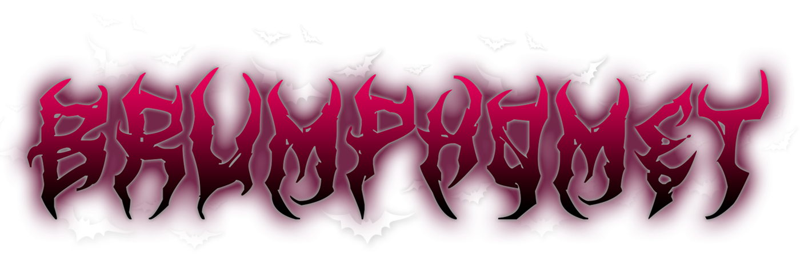
Transmissões ao vivo
Do zero à monetização: a construção de uma comunidade em transmissões ao vivo na Twitch.
Contexto
Visão geral
Este estudo de caso apresenta o desenvolvimento do overlay e do template do meu canal de transmissões ao vivo (lives) na Twitch, o Brumphomet. O nome une Brum, meu sobrenome, a Baphomet, entidade ligada à alquimia e à renovação. O tema do canal é “Solve et Coagula”, expressão em latim que significa “dissolver e coagular”: destruir para reconstruir, trabalhando com contrastes.
O desafio era criar a identidade visual e o overlay do canal sem orçamento inicial, de modo que refletissem minha personalidade, que une o delicado e o intenso. Para representar esse contraste, usei principalmente rosa e preto, explorando a tensão entre uma estética delicada e outra mais agressiva.
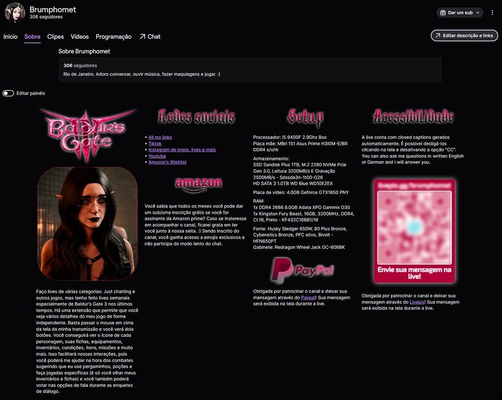
Motivação
Meu interesse por games, aliado à força desse mercado na cultura digital brasileira — segundo dados da Newzoo apresentados no relatório da Abragames em parceria com a ApexBrasil, a demanda por games no país cresceu 3% em 2022 —, me levou a enxergar a Twitch como um espaço para compartilhar experiências e criar conexões. A possibilidade de interagir ao vivo com pessoas que têm os mesmos interesses motivou a criação do Brumphomet Lives, transformando um hobby em um projeto de produção de conteúdo, expressão pessoal e construção de comunidade.
Marca
Identidade
A identidade visual do overlay foi construída para refletir diretamente o universo do canal. A paleta escura, os tons de rosa, os elementos gráficos, os emojis e os fundos de cena foram escolhidos para criar uma estética alternativa e contemporânea, alinhada ao conteúdo de games e à personalidade da Brumphomet. O contraste e a composição também foram pensados para manter essa atmosfera sem comprometer a leitura e a visibilidade durante as lives.
Tipografia
Para manter baixo o investimento inicial, usei uma fonte gratuita. A que melhor se encaixou foi a “ArtDystopia II”, que remete a logotipos de bandas de black metal: tem traços desconectados e ramificados, que lembram chamas, rasgos, raízes e outros elementos da subcultura desse gênero musical. As cores usadas na logo também refletem na identidade contrastante definida para o canal.
Referências visuais
Os logotipos de duas bandas de black metal serviram de referência visual para o lettering da marca.
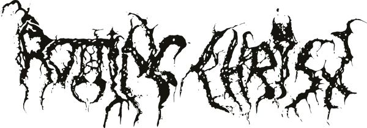
Paleta de cores
Rosa e preto predominam em todas as cenas e representam o contraste entre o delicado e o intenso.
- BasePreto — fundo#111111
- SecundáriaVinho — cor secundária#8F075A
- DestaqueRosa — destaque#E51C78
- RealcesBranco — realces#FFFFFF
Telas de aviso da live
Telas exibidas antes do início da transmissão e quando o canal está fora do ar, que mantêm a identidade visual do canal nesses momentos.
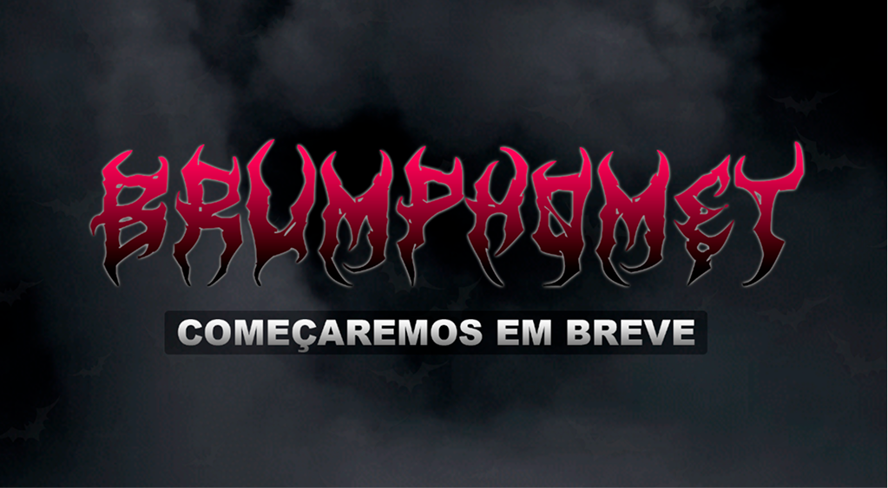
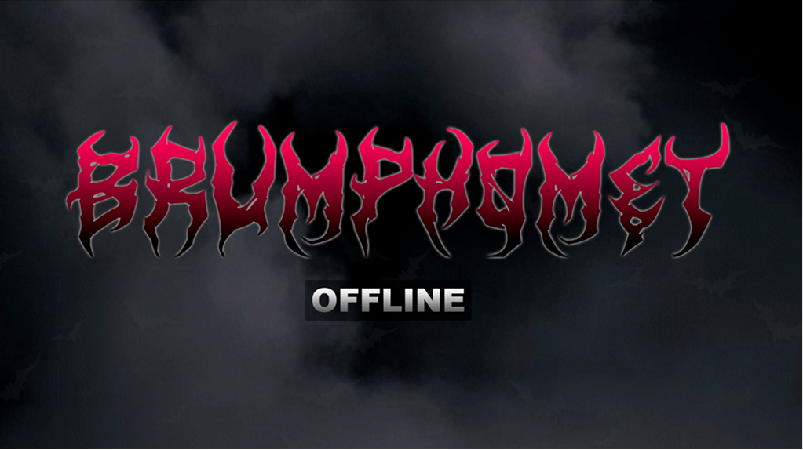
Bastidores
Começando do zero
Orçamento inicial: Zero
Comecei com orçamento zero, sem webcam e com o microfone integrado ao headphone como única entrada de áudio. Utilizei o software gratuito “Iriun Webcam” como uma ferramenta para capturar vídeo através do meu celular, transformando-o provisoriamente em uma webcam. Não era o ideal, mas foi a alternativa possível até que as lives gerassem retorno financeiro.
Quando juntei o valor necessário com doações (donates) e pagamentos da plataforma, comprei uma webcam e um microfone melhores. Para mim, investir no projeto trouxe retorno não só financeiro, mas também de realização pessoal.
Primeiro problema
Eu não tinha webcam.
A solução
Usar um aplicativo gratuito que faz o computador reconhecer a câmera do celular como webcam, o que permitiu começar o canal sem uma câmera dedicada.
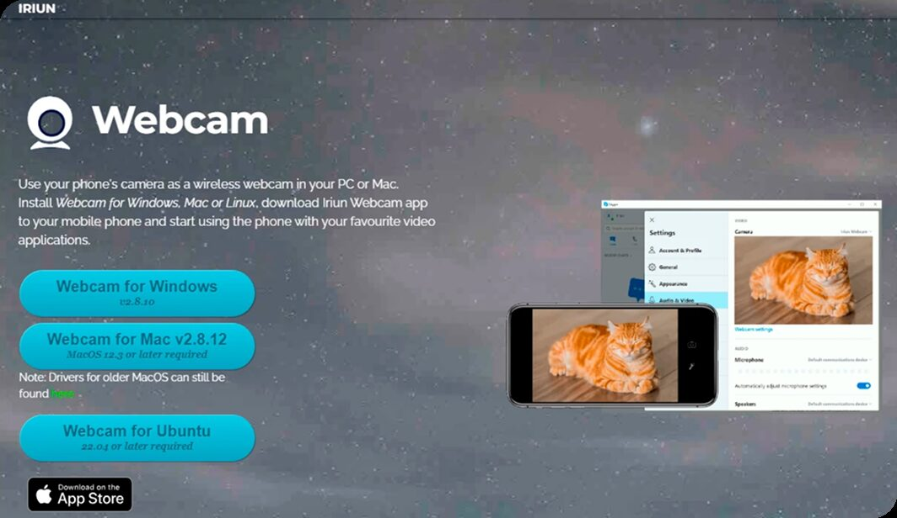
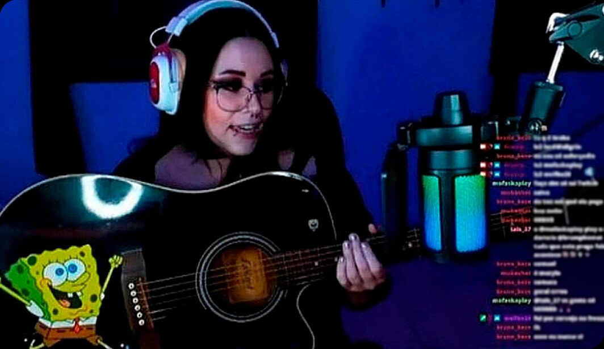
Segundo problema
Eu não tinha Stream Deck (aparelho que permite macros/comandos).
A solução
Configurei atalhos no próprio aplicativo das lives (Streamlabs), transformando um teclado numérico em um Stream Deck provisório.
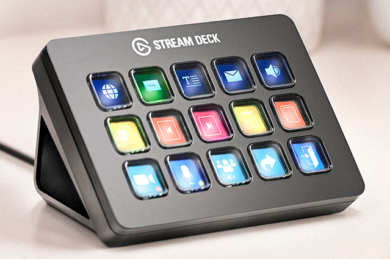
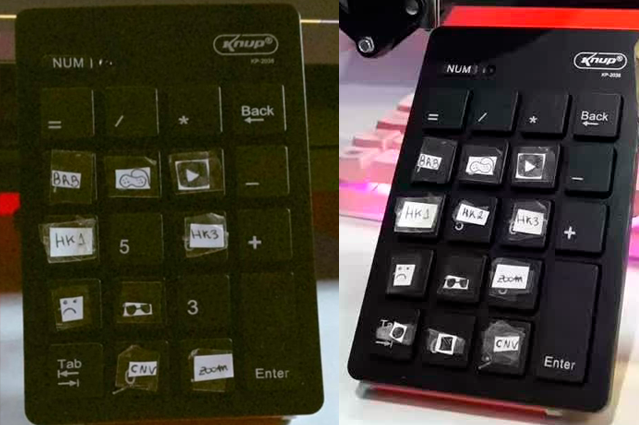
Apelo Emocional: Nostalgia
Quadro musical: Rádio JBrum FM
A ideia inicial era fazer lives de games, mas surgiu a possibilidade de transmitir também maquiagem e conversas informais, na categoria “Just Chatting” (ou "Só na conversa"), que é um espaço na Twitch sem foco em jogar videogames. Para essas lives, decidi apostar na nostalgia, usando a música como ponto de partida.
JBrum FM é um quadro em que me apresento pelo sobrenome “Brum” e faço, ao mesmo tempo, um trocadilho com ele e uma alusão à JB FM, emissora de rádio brasileira sediada no Rio de Janeiro. No quadro, converso com os espectadores enquanto assistimos a videoclipes e atendo a pedidos musicais, como acontecia nas rádios e em canais como MTV e VH1.
Também desenvolvi um logotipo inspirado no original, como homenagem bem-humorada à JB FM e para despertar nostalgia nos espectadores, como se eu fosse radialista.
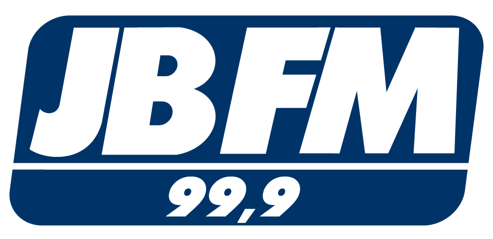
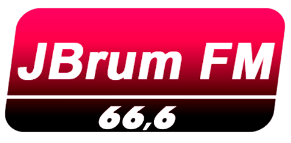
Bônus: Registro atual de engajamento por parte do público nas lives.
(Peço desculpas pelos cabelos um pouco fora do lugar neste registro. O processo criativo nem sempre é tão bonito quanto o resultado final!)
Produção
Configurações
Estrutura e boas práticas
Realizo a organização em camadas para montar cada cena da transmissão.
Nomeio as camadas e as pastas de acordo com a função de cada uma, para encontrar o que preciso com facilidade sempre que faço alterações. Também aplico filtros de áudio e de imagem conforme a necessidade de cada dispositivo, como microfones e câmeras.
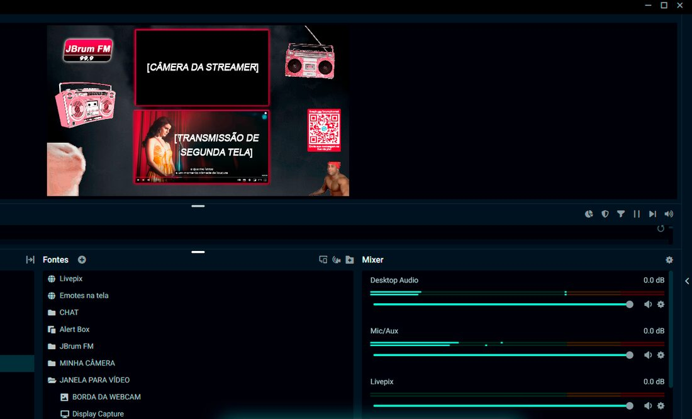
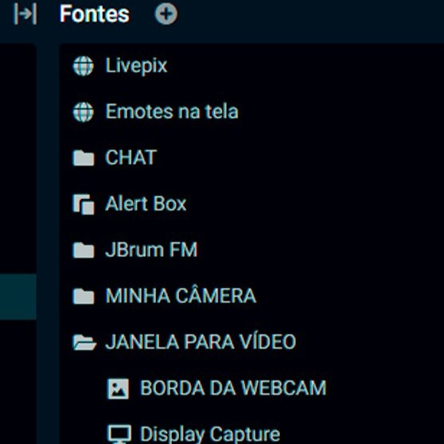
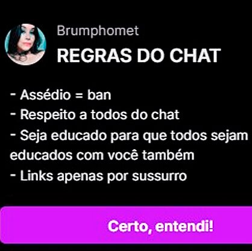
Monitoramento
Mesmo com as regras do chat exibidas antes de os espectadores enviarem mensagens, é preciso monitorá-lo o tempo todo. Para isso, uso o Nightbot, que envia lembretes periódicos sobre boa convivência, e conto com moderadores de confiança, que podem excluir mensagens e banir ou bloquear espectadores.
Eu mesma também acompanho a transmissão em um segundo monitor, pelo Streamlabs e pelo navegador. No Google Chrome, uso a extensão “Easy Auto Refresh” para atualizar a página automaticamente a cada 10 segundos, o que evita que o Streamlabs deixe passar mensagens sem que eu perceba. Assim, tenho duas fontes de monitoramento do chat e da transmissão. Acredito que esse cuidado com os detalhes ajuda a fidelizar o público.
Resultados
Retorno financeiro e investimento
Saques da LivePix
Uso a LivePix para não expor meus dados pessoais como destinatária de transferências via Pix. A plataforma gerencia as doações dos espectadores e exibe as mensagens na tela em tempo real.
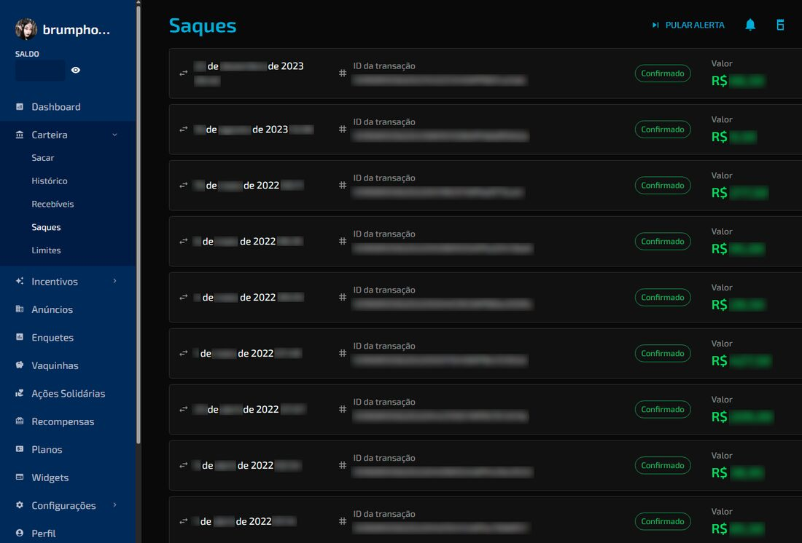
Pagamentos da Twitch
Pagamentos em dólar feitos pela Twitch, referentes ao contrato de Streamer Afiliado.
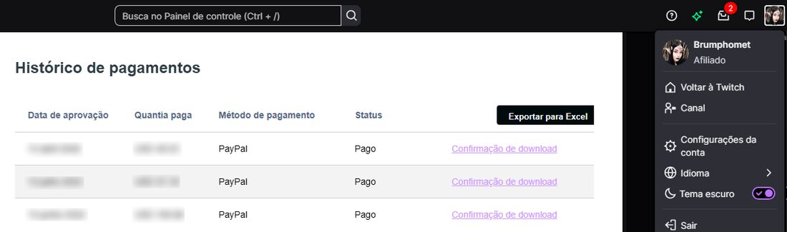
Para controlar as cenas da live, uso um Stream Deck, comprado com o retorno financeiro das lives e configurado com o software do próprio fabricante. No Streamlabs, criei as cenas necessárias para interagir com os espectadores e, à medida que surgiam novas necessidades ao longo das transmissões, acrescentei outras, para ter a interatividade que eu queria.
Para o quadro JBrum FM, configurei vinhetas prontas encontradas na internet e outras que gravei com a minha voz, no estilo das vinhetas tradicionais de rádio, para trazer nostalgia a uma transmissão pela internet. Também configurei memes, antigos e recentes, que uso de vez em quando durante as lives. Pelo que observo, os espectadores se identificam com eles e reagem bem.
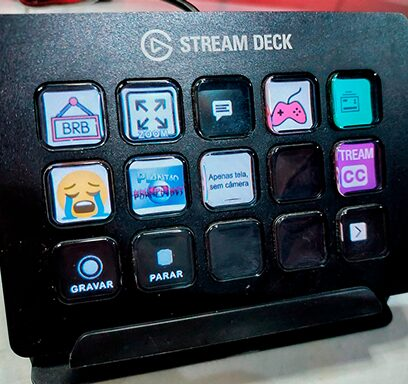
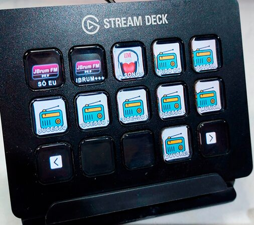
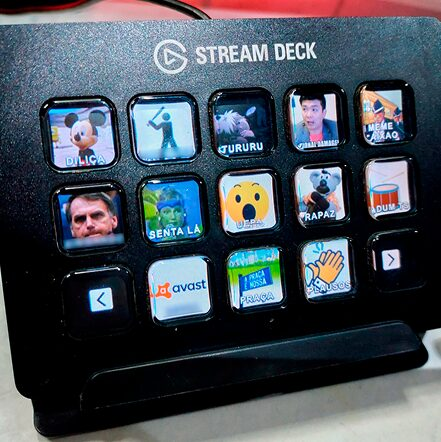
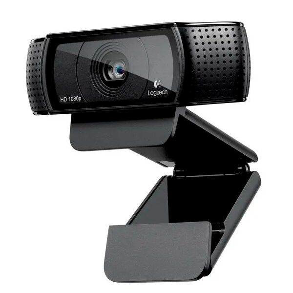
Engajamento
Interatividade e engajamento
Sistema de resgate de pontos
Assim como aciono sons de memes pelo Stream Deck, os espectadores podem resgatar sons durante a live com os pontos de canal que ganham ao assistir às transmissões, funcionalidade nativa da Twitch. Disponibilizo todos os sons que uso e alguns extras exclusivos, editados para não atrapalhar o andamento da live.
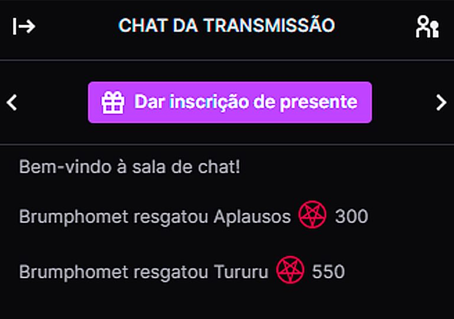
Integração, ferramentas e acessibilidade
Para ampliar a interatividade da transmissão ao vivo, integrei ferramentas como Triggerfyre, StreamElements, Nightbot e Stream-CC, entre outras.
Triggerfyre
Gerencia alertas interativos de som e vídeo na tela: o chat ativa memes, clipes de áudio ou animações com pontos de canal ou comandos.
StreamElements
Plataforma que reúne overlays na nuvem, bots de chat, alertas de seguidores e de inscrições e sistema de fidelidade.
Nightbot
Moderador automático: responde a comandos, filtra palavras ofensivas, evita spam e gerencia sorteios e pedidos de música.
Stream-CC
Gera legendas ocultas (closed captions) automáticas em tempo real, que transcrevem a voz para tornar a transmissão acessível a pessoas com deficiência auditiva.
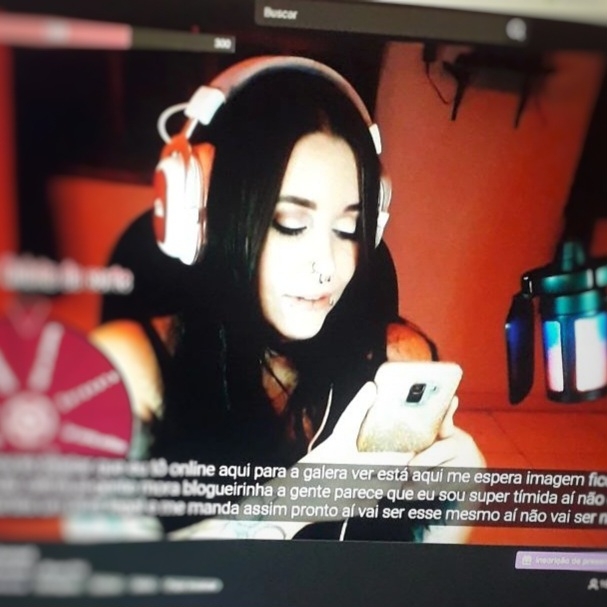
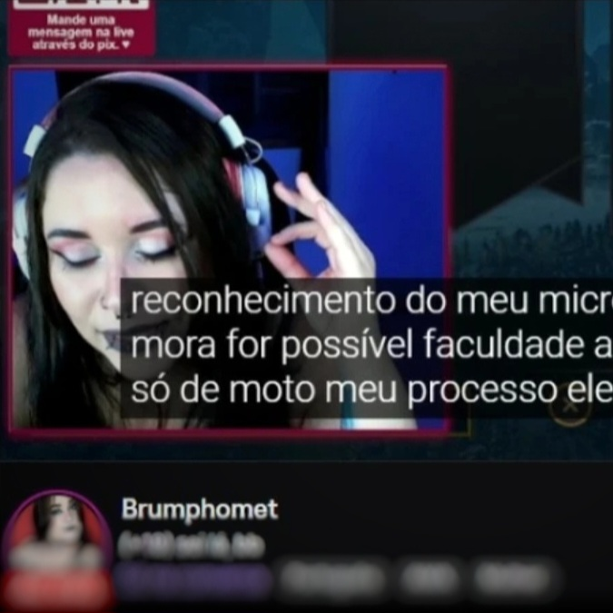
Público internacional
Embora as lives sejam em português, o público também inclui espectadores internacionais: há interação no chat em português, inglês e alemão. Por isso, incluí um aviso informando que também respondo em inglês e alemão, para tornar a comunicação mais acessível a espectadores de diferentes países.
Baldur's Gate 3: integração com a Twitch
Com o tempo, passei a transmitir “Baldur's Gate 3”, RPG premiado que tem integração com a Twitch. Por meio dela, os espectadores podem passar o mouse sobre o vídeo para ver ficha, inventário, condições e missões dos personagens e votar em enquetes durante os diálogos.
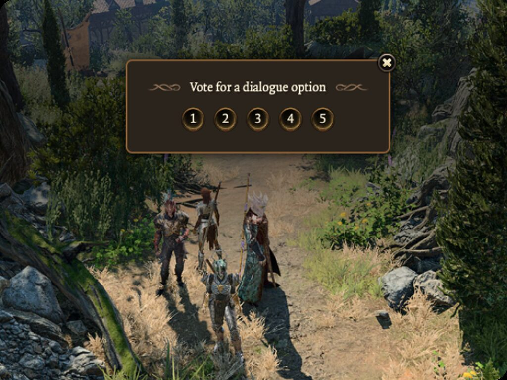
Outras redes sociais e cortes das lives
Além das lives, publico reels no Instagram, vídeos no TikTok e shorts no YouTube e, atualmente, escrevo roteiros para, em breve, publicar vídeos longos no YouTube. O conteúdo gira em torno de Baldur's Gate 3 e Magic: The Gathering.
Publico cortes das lives em vídeos curtos, com trechos de gameplay e de interação com o chat. Como próximo passo, pretendo transmitir partidas de Magic no Table Commander, site em que cadastro meus decks e jogo com amigos.
Melhores momentos
Cortes das lives e presença
em outras redes sociais
Gameplays, conversas e interações com o chat em vídeos curtos. Os títulos são os mesmos publicados nas redes sociais, em linguagem informal, pensada para um público jovem e gamer.
E agora?
Aprendizados
O que este projeto trouxe à minha jornada
Este caso reforçou minha crença de que o trabalho em equipe, tanto entre pessoas quanto entre plataformas, é essencial para um bom projeto. Durante a configuração do overlay e de todos os outros aspectos das lives e da marca Brumphomet, pesquisei, assisti a tutoriais, conversei com outros streamers e consultei os espectadores, buscando um resultado que me satisfizesse pessoal e profissionalmente e que também agradasse à comunidade que construímos juntos.
Também acredito que cuidado e planejamento levam a resultados muito satisfatórios.
O protótipo inicial deste estudo de caso está disponível no Figma para consulta detalhada.